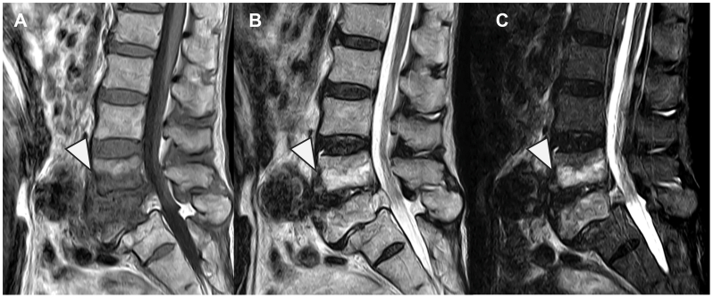
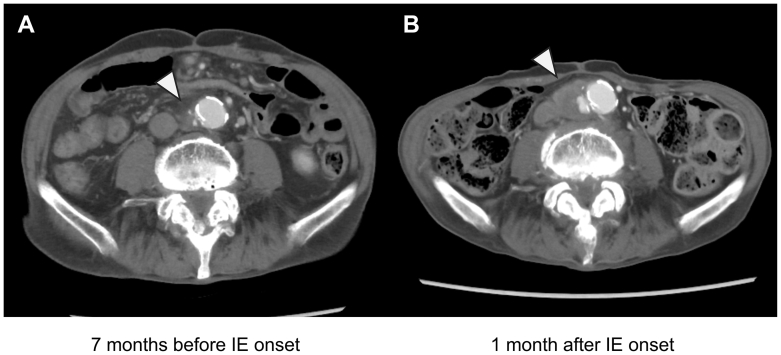

6163 — Viêm đĩa đệm–thân sống + phình động mạch chủ nhiễm khuẩn: hai ổ liền kề và thứ tự can thiệp / Contiguous spondylodiscitis and infected aortic aneurysm
Tags: pattern:phinh-dong-mach pattern:viem-dia-dem pattern:khi-quanh-mach pattern:phu-tuy-xuong vung:dong-mach-chu-bung vung:cot-song protocol:CTA protocol:MRI-cot-song
Mức chắc chắn (certainty): tổng hợp y văn (literature synthesis) — ghép 1 ca bệnh hai ổ liền kề có phẫu thuật một thì + 2 ảnh (J Vasc Surg Cases Innov Tech 2026, PMC13382081, CC BY), 1 loạt ca 15 bệnh nhân viêm ĐMC nhiễm khuẩn được can thiệp nội mạch (J Clin Med 2024, PMC11354867, CC BY) và bài nền 1919 (phình nhiễm ĐMC nguyên bản, đã có nguồn riêng). Không có thử nghiệm ngẫu nhiên về thứ tự mổ.
Câu chốt: khi sốt + đau lưng gặp túi phình ĐMC lệch tâm đang to nhanh, phải coi là một bệnh — hai ổ: viêm đĩa đệm–thân sống và phình ĐMC nhiễm khuẩn lây nhau qua đường máu hoặc lan kế cận. Sai lầm chết người không phải là đọc sai một trong hai, mà là dừng lại khi đã tìm thấy một ổ. Về điều trị: đường kính KHÔNG phải ngưỡng quyết định (3–4 cm đã có thể vỡ); tốc độ to và hình thái túi mới là ngưỡng, và mảnh ghép/ dụng cụ đặt qua vùng nhiễm là thất bại — nên phải cắt lọc, ghép tự thân, đi đường mạch tránh ổ nhiễm, phủ mạc nối.
1. Tổng quan bệnh học – cơ chế hình ảnh (TẠI SAO)
1.1 Một dòng máu, hai ổ: sinh lý bệnh
- Nguồn gieo thường gặp: viêm nội tâm mạc nhiễm khuẩn (như ca minh họa), nhiễm khuẩn huyết do S. aureus / Salmonella, ổ nhiễm tiết niệu–tiêu hóa kề cận. Trong loạt 15 ca viêm ĐMC nhiễm khuẩn, 47% do S. aureus, phần còn lại chủ yếu Salmonella (PMC11354867).
- Ở ĐMC: vi khuẩn vào vasa vasorum của lớp áo ngoài → viêm mủ lớp áo giữa → phá hủy sợi đàn hồi và collagen → thành mất sức chịu lực từng ổ → túi lệch tâm (saccular), bờ nhiều thùy, to nhanh. Vì mất thành khu trú chứ không phải giãn đều, đường kính 3–4 cm đã có thể vỡ — ngưỡng 5,5 cm của phình xơ vữa không áp dụng (bài 1919).
- Ở cột sống: đĩa đệm người lớn không có mạch máu; vi khuẩn theo động mạch thân sống tới đốt sống kề đĩa, rồi lan qua đĩa. Vì vậy tổn thương lấy đĩa làm trung tâm (disc-centered), phá hai bờ đốt kề và hẹp khe đĩa — khác hẳn di căn (ở thân sống, chừa đĩa).
- Hai ổ lây nhau thế nào: hoặc gieo máu cùng lúc (như ca minh họa: viêm nội tâm mạc → cả ĐMC và L4/5), hoặc lan kế cận từ ổ cạnh ĐMC (túi thừa, đại tràng, ổ mủ sau phúc mạc). Trong loạt ca viêm ĐMC, 3/15 (20%) có viêm đĩa đệm kèm theo (PMC11354867) — đủ thường gặp để phải soát chủ động.
1.2 TẠI SAO mỗi chuỗi xung cho một câu trả lời khác nhau
- MRI cột sống — vì sao là "vua" của ổ xương: viêm làm phù tủy xương (nước ngoại bào tăng) → T1 giảm, T2/STIR tăng; ngấm thuốc ở đĩa và hai bờ đốt; áp-xe ngoài màng cứng là khối viền ngấm thuốc. Trên X-quang, phải mất 30–50% khoáng chất mới thấy bờ đốt mờ — trễ 2–4 tuần; CT thấy bào mòn bờ đốt sớm hơn nhưng kém nhạy với phù tủy và không thấy áp-xe mô mềm rõ như MRI.
- CTA ĐMC — vì sao phải so phim cũ: túi nhiễm thay đổi hình thái trong vài tuần, nên một phim đơn độc có thể "chưa đáng kể". Ca minh họa là ví dụ thuần: 7 tháng trước còn là phình dưới thận "ổn định", 1 tháng sau khởi phát nhiễm đã to thêm, bờ không đều, có dịch/mỡ quanh mạch → nguy cơ vỡ cận kề (PMC13382081).
- TẠI SAO có khí quanh ĐMC: vi khuẩn sinh hơi + ổ mủ hoại tử. Ở ĐMC nguyên bản (chưa có mảnh ghép), khí quanh mạch là dấu hiệu rất đặc hiệu của nhiễm — khác khí bẫy lành tính sau EVAR (bài 148, bài 1919).
- TẠI SAO PET/CT hữu ích nhưng không thay CTA: đại thực bào hoạt hóa quanh ổ nhiễm tăng tiêu thụ FDG → ngấm khu trú. PET giúp khi cấy máu âm hoặc nghi ổ thứ hai, nhưng dương tính giả sau mổ, trong mảng xơ vữa viêm, và ở u (bài 1919).
1.3 Ngưỡng định lượng nằm lòng
| Đại lượng | Số liệu | Nguồn |
|---|---|---|
| Phình nhiễm trong mọi phình ĐMC | 1–3% | bài 1919 (dẫn PMC12148370) |
| Viêm đĩa đệm kèm viêm ĐMC | 3/15 (20%) | PMC11354867 |
| Viêm ĐMC có vỡ kín / vỡ tự do lúc can thiệp | 40% / 13% | PMC11354867 |
| Tử vong 30 ngày sau can thiệp nội mạch | 13% (2/15) | PMC11354867 |
| Tử vong mổ (loạt được trích) | 21%; sống 1 năm 82%, 5 năm 50% | PMC11354867 (dẫn loạt khác) |
| Can thiệp lại | 20% trong 31,6 ± 23,1 tháng | PMC11354867 |
| Kháng sinh tĩnh mạch có đích | trung bình 51 ± 28,6 ngày | PMC11354867 |
| Dày thành ĐMC lúc chẩn đoán | 30,3 ± 19,2 mm | PMC11354867 |
| Thời gian từ nhiễm huyết đến viêm đĩa đệm (ca minh họa) | ≈ 1 tháng | PMC13382081 |
| Thời gian nằm viện sau mổ một thì (ca minh họa) | ≈ 3 tháng, tiếp tục kháng sinh uống | PMC13382081 |
| Cỡ mẫu ca minh họa | 1 ca (77 tuổi, nam) | PMC13382081 |
2. Mẫu hình + chẩn đoán phân biệt theo vị trí (Gamut)
Mẫu hình chung: sốt âm ỉ + đau lưng dữ dội + cấy máu dương; hình ảnh hai ổ: ĐMC dưới thận lệch tâm, bờ không đều, to nhanh, viêm mỡ quanh mạch ± khí và đĩa đệm L4/5 (hoặc L3/4) hẹp, hai bờ đốt bào mòn, phù tủy, ngấm thuốc ± áp-xe ngoài màng cứng.
- Theo vị trí ĐMC: dưới thận (hay gặp, dễ mổ/EVAR) · cạnh tạng–trên thận (khó, cần stent phân nhánh hoặc mổ) · ngực (thường kèm nhiễm Salmonella, dễ vỡ vào trung thất).
- Theo vị trí cột sống: thắt lưng (hay gặp nhất, kề ĐMC — đúng vùng nguy hiểm của bài này) · ngực (kèm áp-xe cạnh sống lan trung thất) · cổ (kèm áp-xe sau hầu, chèn đường thở).
- Gamut "viêm đĩa đệm lấy đĩa làm trung tâm": vi khuẩn (Staph, Salmonella, Brucella) · lao (Pott) · nấm · viêm đĩa đệm vô khuẩn sau mổ · bệnh khớp do lọc máu (amyloid β2-microglobulin) · bệnh Charcot cột sống · Modic 1 (giả nhiễm).
- Gamut "khối/dịch quanh ĐMC": phình nhiễm · phình viêm (inflammatory AAA) · máu tụ sau vỡ kín · xơ hóa sau phúc mạc · lymphoma · sarcoma nội mạc · nhiễm mảnh ghép (bài 148, 1919).
3. Bảng so sánh phân biệt (ma trận đối chiếu)
| Thực thể (entity) | Hình ảnh điển hình | Chốt vào (rule-in) | Chốt loại (rule-out) | Gợi ý xác nhận |
|---|---|---|---|---|
| Hai ổ liền kề: viêm đĩa đệm + phình ĐMC nhiễm | Túi lệch tâm to nhanh + viêm mỡ quanh ĐMC ± khí; đĩa đệm hẹp, bào mòn 2 bờ đốt, phù tủy, ngấm thuốc | Cấy máu dương + hai ổ cùng lúc + to nhanh khi so phim cũ | Đĩa đệm bình thường + ĐMC vôi hóa liên tục, không viêm quanh mạch → không phải | CTA 3 thì lát 1 mm + MRI cột sống; cấy máu 3 bộ trước kháng sinh; PET/CT |
| Phình ĐMC nhiễm đơn độc (1919) | Túi lệch tâm, nhiều thùy, mất liên tục vôi hóa, dịch/khí quanh mạch | Sốt + cấy dương + túi lệch tâm có viêm quanh mạch | Hình thoi đều + vôi hóa liên tục + không viêm → xơ vữa | CTA; PET/CT khi cấy âm |
| Viêm đĩa đệm vi khuẩn đơn độc | Disc-centered, hẹp khe đĩa, phù tủy 2 bờ đốt, ngấm thuốc, áp-xe ngoài màng cứng | MRI disc-centered + cấy/ sinh thiết dương | ĐMC bình thường, không túi, không viêm quanh mạch | MRI + cấy đĩa; luôn CTA ĐMC để tìm ổ thứ hai |
| Lao cột sống (Pott) | Phá thân sống nhiều hơn đĩa, áp-xe lạnh dưới dây chằng, gù, nhiều tầng | Phá thân sống + áp-xe lớn + dịch tổ chức hóa + gù | Đĩa hẹp sớm, bào mòn 2 bờ đối xứng, khởi phát cấp → nghĩ vi khuẩn | PCR lao/IGRA; sinh thiết; MRI |
| Modic 1 (giả nhiễm) | Phù tủy hai bờ đốt đối xứng, không bào mòn, không ngấm đĩa, không áp-xe | Phù hai bờ đốt, đĩa còn chiều cao, không ngấm thuốc đĩa | Bào mòn bờ đốt + ngấm thuốc đĩa + áp-xe → nhiễm | MRI; theo dõi, không sinh thiết |
| Di căn cột sống | Thân sống bị phá, chừa đĩa, ngấm thuốc, có khối mô mềm | Chừa đĩa + tổn thương thân sống + tiền sử ung thư | Disc-centered + hẹp khe đĩa → nhiễm | MRI + PET/CT; sinh thiết |
| Phình viêm (inflammatory AAA) | Dày thành đồng tâm đều, xơ hóa quanh ĐMC, không khí, không phá xương | Dày thành đều + xơ hóa + không sốt/cấy âm | Túi lệch tâm + khí + bào mòn đốt sống → nhiễm | CTA; IgG4/CRP; PET âm tính |
| Nhiễm mảnh ghép nội mạch (148) | Dịch/khí quanh mảnh ghép, giả phình miệng nối | Khí ≥ 7 tuần hoặc dịch ≥ 3 tháng sau EVAR, tăng dần | Khí/dịch sớm, nhỏ dần → sinh lý | MAGIC; CTA; PET |

Nam 77 tuổi, viêm nội tâm mạc nhiễm khuẩn, 1 tháng sau đau lưng. (A) T1W xương dọc: giảm tín hiệu thân sống và đĩa L4/5 (đầu mũi tên). (B) T2W: tăng tín hiệu cùng vùng, khe đĩa hẹp. (C) STIR: phù tủy rõ ở hai bờ đốt và mô cạnh sống. Nguồn: J Vasc Surg Cases Innov Tech 2026 (PMC13382081), Fig. 1, CC BY 4.0.4. Protocol chụp + thứ tự can thiệp
4.1 Trình tự chẩn đoán (không được đảo)
- Cấy máu 3 bộ trước kháng sinh + CRP, PCT, siêu âm tim tìm viêm nội tâm mạc (nguồn gieo).
- MRI cột sống (T1, T2, STIR, T1 sau tiêm fat-sat, ± toàn bộ cột sống nếu đau nhiều tầng): xác định đĩa nào, mức phá xương, áp-xe ngoài màng cứng, chèn tủy.
- CTA ĐMC bụng–chậu 3 thì, lát 1 mm, cửa sổ xương: tìm túi lệch tâm, dịch/khí quanh mạch, mất vôi hóa, huyết khối trong túi, và so với mọi phim cũ để tính tốc độ to.
- Sinh thiết/ chọc hút đĩa qua CT khi cấy máu âm và chẩn đoán chưa rõ. Không chọc hút túi phình ĐMC "để chẩn đoán" — nguy cơ vỡ và gieo nhiễm.
- PET/CT khi cấy âm, nghi ổ thứ ba, hoặc theo dõi đáp ứng sau mổ.
4.2 Thứ tự can thiệp — vì sao "một thì" có thể đúng
flowchart TD A[Sốt + đau lưng + cấy máu dương] --> B[MRI cột sống: viêm đĩa đệm] B --> C[CTA ĐMC: tìm ổ thứ hai] C -->|Túi to nhanh hoặc vỡ kín| D[Cấp cứu: sửa ĐMC + cắt lọc cột sống] C -->|Chưa dọa vỡ| E[Kháng sinh đích + đánh giá thần kinh] E -->|Chèn tủy hoặc biến dạng tiến triển| D E -->|Không chèn tủy| F[Theo dõi CTA + MRI 4-6 tuần] D --> G[Ghép tự thân, không dụng cụ, đường mạch tránh ổ nhiễm, phủ mạc nối] G --> H[Kháng sinh tĩnh mạch 6 tuần rồi uống kéo dài]
- Nguyên tắc 1 — cắt lọc triệt để: lấy hết mô hoại tử, curette đĩa và bờ đốt, dẫn lưu ổ mủ.
- Nguyên tắc 2 — không đặt dị vật qua vùng nhiễm: mảnh ghép mạch và dụng cụ cột sống đều là bề mặt cho biofilm. Ca minh họa dùng ghép tự thân xương mào chậu KHÔNG dụng cụ để tái tạo cột sống trước, và đi đường mạch tách khỏi ổ cột sống (infection-avoiding graft routing) — rồi phủ mạc nối (PMC13382081).
- Nguyên tắc 3 — ghép tẩm rifampicin dùng khi buộc phải đặt vật liệu tổng hợp tại chỗ (ca minh họa), nhưng không thay thế cắt lọc và che phủ.
- Nguyên tắc 4 — thời gian kháng sinh: khung 6 tuần tĩnh mạch là thực hành thường dùng (loạt ca trung bình 51 ± 28,6 ngày), sau đó uống kéo dài — ca minh họa uống tiếp tới ≈ 3 tháng và không tái phát (PMC11354867; PMC13382081).
- Theo dõi: CTA + MRI lặp lại 4–6 tuần và khi có triệu chứng mới; không dùng đường kính đơn thuần để quyết định dừng — túi còn to lên dù kháng sinh = thất bại nội khoa, phải can thiệp (bài 1919).
4.3 Hệ phân độ liên quan
- Phình ĐMC nhiễm: không có RADS riêng; dùng hình thái + tốc độ to + dấu viêm làm "phân độ thực hành" (bài 1919).
- Viêm đĩa đệm: không có score hình ảnh chuẩn hóa; yếu tố quyết định là chèn tủy/áp-xe ngoài màng cứng, mất vững, biến dạng — không phải kích thước ổ viêm.
5. Biến thể bình thường và cạm bẫy
- Cạm bẫy 1 — "thỏa mãn tìm kiếm" (satisfaction of search): thấy viêm đĩa đệm là dừng, hoặc thấy túi phình là dừng. Quy tắc cứng: có một ổ → phải CTA ĐMC + MRI cột sống cho ổ kia, vì 20% ca viêm ĐMC có viêm đĩa đệm kèm (PMC11354867).
- Cạm bẫy 2 — chờ "đủ to" mới mổ: phình nhiễm vỡ ở 3–4 cm; ngưỡng 5,5 cm không áp dụng. Dấu hiệu hành động là to nhanh + đau + bờ không đều, không phải con số tuyệt đối.
- Cạm bẫy 3 — đọc "khí quanh ĐMC" như khí bẫy: ở ĐMC nguyên bản, khí quanh mạch hầu như luôn là nhiễm; sau EVAR mới có khí lành tính < 7 ngày (bài 148).
- Cạm bẫy 4 — bỏ sót ổ nhiễm thứ ba: răng, xoang, túi thừa, đường mật, van tim, ổ tiêm chích. Ca minh họa có viêm nội tâm mạc đứng trước.
- Cạm bẫy 5 — "MRI bình thường sớm": trong vài ngày đầu, phù tủy có thể chưa rõ; nếu lâm sàng mạnh, chụp lại sau 3–5 ngày hoặc làm PET/CT, đừng kết luận loại trừ.
- Cạm bẫy 6 — Modic 1 bị điều trị như nhiễm: phù đối xứng hai bờ đốt, đĩa còn chiều cao, không ngấm thuốc đĩa, không áp-xe → không sinh thiết, không kháng sinh dài.
- Cạm bẫy 7 — cấy máu âm vì đã dùng kháng sinh: không loại trừ nhiễm; cần sinh thiết đĩa hoặc PET/CT, và nhớ rằng không có xét nghiệm nào một mình loại trừ.
- Biến thể bình thường cần biết: đĩa đệm thoái hóa có phù nhẹ kiểu Modic 1; vôi hóa ĐMC không liên tục ở người già do mảng xơ vữa (khi không có viêm quanh mạch và không to nhanh thì không phải nhiễm); khí trong ruột kề ĐMC trên CT không cản quang — luôn đọc cửa sổ mô mềm + so thì.
6. Tự lượng giá — Blind Quiz (ảnh ngoài, đáp án trong khối chi tiết)
Ca 1 — nam 77 tuổi, sốt và đau lưng 1 tháng sau nhiễm khuẩn huyết
- Gợi ý lâm sàng: đau lưng tăng dần, CRP cao, cấy máu dương; chưa có yếu chi.
- Câu hỏi: Tổn thương lấy đĩa hay lấy thân sống làm trung tâm? Ba chẩn đoán phân biệt? Vì sao phải chụp thêm ĐMC?
Bấm để hiện đáp án (findings + chẩn đoán)
- Dấu hiệu (findings): đĩa L4/5 hẹp, giảm tín hiệu T1 và tăng tín hiệu T2/STIR ở hai bờ đốt kề và đĩa, phù mô cạnh sống → viêm đĩa đệm–thân sống.
- Chẩn đoán (diagnosis): viêm đĩa đệm–thân sống do vi khuẩn (disc-centered). Phân biệt: lao (phá thân sống, áp-xe lạnh), di căn (chừa đĩa), Modic 1 (không bào mòn, không ngấm đĩa).
- Vì sao phải chụp ĐMC: cùng một đợt nhiễm khuẩn huyết có thể gieo cả hai ổ; 20% ca viêm ĐMC có viêm đĩa đệm kèm (PMC11354867) — và ổ ĐMC là ổ chết người.
- Nguồn ảnh: J Vasc Surg Cases Innov Tech 2026 (PMC13382081), Fig. 1, CC BY 4.0.
Ca 2 — cùng bệnh nhân, CTA bụng so hai thời điểm

- Gợi ý lâm sàng: cùng bệnh nhân trên; không đau bụng, chỉ đau lưng.
- Câu hỏi: Hai ảnh khác nhau ở điểm nào? Vì sao không thể chờ đến 5,5 cm? Kế hoạch mổ nên đặt mảnh ghép ở đâu?
Bấm để hiện đáp án (findings + chẩn đoán)
- Dấu hiệu (findings): (A) 7 tháng trước: phình dưới thận hình thoi, bờ tương đối đều. (B) 1 tháng sau khởi phát nhiễm: túi to ra, bờ không đều, dịch/mỡ quanh ĐMC (đầu mũi tên) — thay đổi hình thái trong vài tuần.
- Chẩn đoán (diagnosis): phình ĐMC nhiễm khuẩn có nguy cơ vỡ cận kề — tốc độ to + hình thái là ngưỡng, không phải đường kính.
- Kế hoạch: cắt lọc + ghép tự thân/tẩm rifampicin, đi đường mạch TRÁNH ổ cột sống, phủ mạc nối; ca này mổ một thì cùng cắt lọc cột sống, tái tạo bằng xương mào chậu không dụng cụ (PMC13382081).
- Vì sao: dụng cụ/mảnh ghép xuyên vùng nhiễm = nhiễm mảnh ghép; đường mạch tách khỏi ổ xương giảm gieo nhiễm.
- Nguồn ảnh: J Vasc Surg Cases Innov Tech 2026 (PMC13382081), Fig. 2, CC BY 4.0.
Bài liên quan chéo
- 1919 – Phình động mạch chủ bụng nhiễm khuẩn — chẩn đoán và chọn EVAR/mổ hở.
- 148 – Nhiễm mảnh ghép nối mạch ĐMC — khí/dịch quanh mảnh ghép, tiêu chuẩn MAGIC.
- 171 – Bóc tách ĐMC bụng và IMH — phân biệt túi phình thật/giả, huyết khối trong thành.
- 3012 – Áp-xe ngoài màng cứng cột sống — biến chứng thần kinh của ổ cột sống.
Ảnh
- Hai ảnh từ một ca (J Vasc Surg Cases Innov Tech 2026, PMC13382081, CC BY 4.0): MRI cột sống (Fig. 1) và CTA bụng hai thời điểm (Fig. 2). Không tạo ảnh ghép vì mỗi hình là bảng nhiều panel của cùng bệnh nhân.
- Chi tiết nguồn + giấy phép từng file:
images/CREDITS.md.
Không dùng để chẩn đoán độc lập khi chưa có người hướng dẫn.